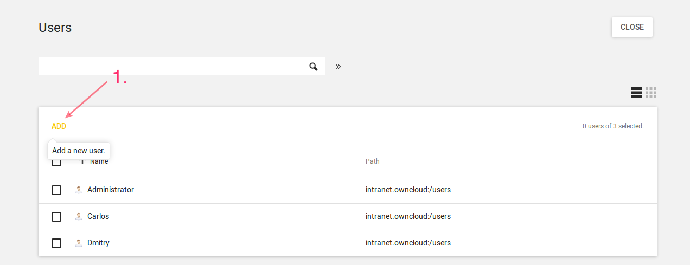
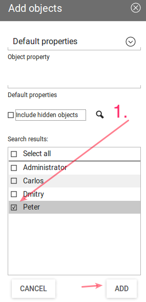

Adding Users and Groups in UCS for ownCloud¶
If you want to add users and groups to your ownCloud installation via the UCS (Univention Corporate Server) UI, here’s a concise guide showing how.
Login to the Univention Management Console¶
After logging in to the Univention server, under “Administration”, click the first option, labeled “System and domain settings”.

This takes you to the Univention Management Console.
Create the User¶
Once there, click “Users”.

In the screen that appears, add a new user by clicking “ADD” in the top left-hand corner of the users table.
This opens up a new user dialog, where you can supply the relevant details for the new user. Enter a username and optionally a first name, last name, and a title. Then click “NEXT”.

In the next dialog that appears, enter and confirm the password. You can, optionally, choose some further options, if desired. Then click “CREATE USER”.

The new user will have been created, so click the “CLOSE” button, in the top right-hand corner, to go back to “Favorites”.

Create the Group¶
Now it’s time to create a new group. Click “Groups”, which is located between “Computers” and “Software Update”.

From there, click “ADD”, located on the left-hand side of the groups table.

In the next dialog that appears, first enter the name of the group and optionally a description. Then, under “Members of this group”, click “ADD”.

This opens up an “Add objects” (or “Add new group”) dialog. Find the user, in the list at the bottom, that you want to add to the group, check the checkbox next to their name, and click “ADD”.
After that, click on “ownCloud” in the left-hand side navigation, and check the option “ownCloud enabled”. And lastly, click “CREATE GROUP”.

With that done, the new user and group are now available in your ownCloud installation.
Note
Depending on your installation, you will either see these changes immediately or you will have to wait for the user sync to be done. This happens ever 10 minutes by default.